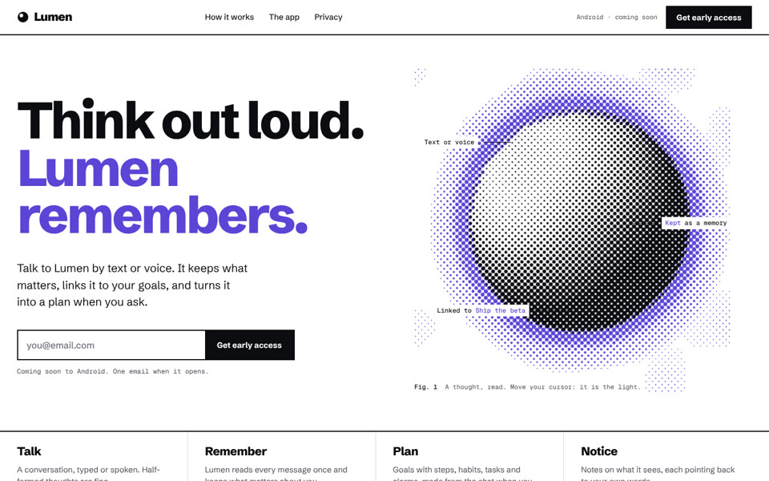
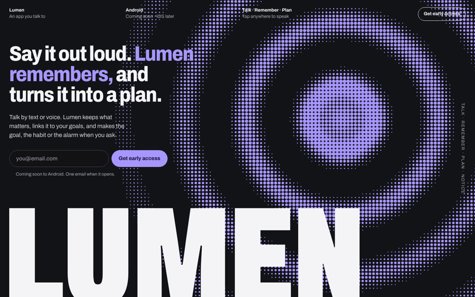
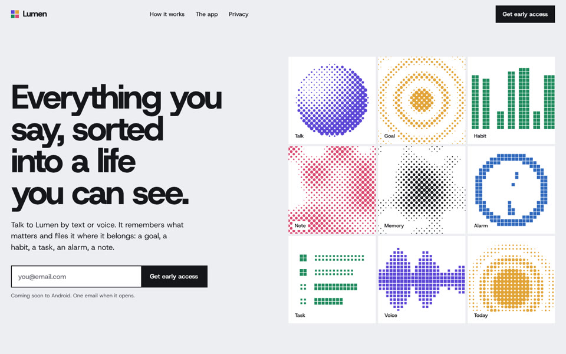

Three directions for the Lumen site
All three are Swiss style with animated halftone dots, and all show the app's Chats, Today, Insights and Plan screens as half-height phones. They share the same copy so you can compare the design alone. Open each one, scroll it, and move your cursor over the dots.
A Specimen
Like a Swiss science print: white paper, black and violet ink, a lit halftone sphere with labelled callouts. As you scroll, one dot field changes from scattered noise to a sphere to four neat bars: a thought becoming a plan.
- Feel
- Precise, calm, technical
- Ground
- White, black ink, one violet
- Motion
- Your cursor lifts the ink like light; a scroll-driven morph

B Poster
Like a 1960s Zurich concert poster: graphite, violet dot rings spreading out like a voice, and a huge condensed LUMEN across the bottom. A violet block explains how it works.
- Feel
- Bold, loud, memorable
- Ground
- Graphite (the app's dark), violet
- Motion
- Rings follow your cursor; tap or click anywhere to send a pulse

C System
Like a Swiss identity system (think Munich '72 signage): one colour for each thing Lumen makes, such as goals, habits, alarms and notes, and a grid of animated halftone tiles, one per kind.
- Feel
- Organised, friendly, colourful
- Ground
- Light grey, five colours from the app
- Motion
- Each tile has its own animation; your cursor adds ink

Phone screens are rebuilt in HTML from the app's layout and show sample content. The early-access form opens an email for now; connect a form service to collect emails directly. You can mix them too, for example A's hero with B's violet section.